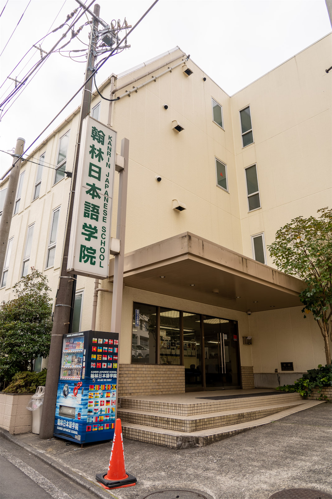

 Мы находимся в 25 минутах езды на электричке от центра Токио (Сибуя) и в 40 минутах - от центра Йокогамы в очень тихом, чистом и зеленом районе Аобадай. Развитая инфраструктура делает Аобадай удобным местом для жизни и учебы. Рядом со школой есть большой универмаг и множество супермаркетов, ресторанов, кафе, банков, магазинов электроники и спортивных клубов. Цены на товары и услуги ниже, чем в Токио. От станции до школы можно добраться за 5 минут.
На первом этаже находится школьный офис, учительская и ресепшен. Школьный офис сделан из прозрачного стекла, что дает возможность установить контакт с персоналом школы и учителями. На втором, третьем и четвертом этажах расположены 17 учебных классов и библиотека - комната для самостоятельных занятий. После уроков учащиеся могут оставаться в школе и учиться самостоятельно. В школе царит дружелюбная и непринужденная атмосфера, которая способствует продуктивной учебе.
Большое внимание уделяется культурным мероприятиям — во время каникул и праздников студент может принять участие в экскурсиях, пикниках, которые организовывает школа. Школа Канрин является одной из самых крупных в городе Йокогама и входит в десятку лучших школ страны по качеству образования и системе преподавания.
Во время учебы студенты с лучшей успеваемостью имеют шанс получить стипендию или существенную скидку на оплату второго года обучения
На церемонии выпуска студенты, показавшие лучшую успеваемость за время учебы, награждаются денежными призами.
Нажмите на кнопку, чтобы отсортировать таблицу численно:
| Оплата за 6 месяцев обучения | 440 000 ¥ | 202 480 ₽ | 3209 $ |
| Оплата за год обучения | 770 000 ¥ | 354 341 ₽ | 5616 $ |
| Оплата за 2 года обучения | 1 430 000 ¥ | 658 062 ₽ | 10 430 $ |
| Оплата за 1 месяц общежития | 45 000 ¥ | 21 289 ₽ | 328 $ |
| Оплата за 1 месяц гестхауза | 57 000 ¥ | 26 966 ₽ | 415 $ |
| Оплата первых 3х месяцев общежития | 191 000 ¥ | 90 362 ₽ | 1395 $ |